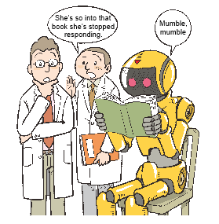

東京大学大学院 教育学研究科 教授

レ ストランや料理の紹介を読んで美味しそうと思うことと実に食べて美味しさを体験することとが質的に違うこと、そして味が「わかる」ことが後者を指すこと は、恐らく誰もが認めるところでしょう。料理ほど明確ではありませんが、映画評を読んだだけでその映画がわかったとは言えないことにも、たぶん多くの人が 同意するのではないでしょうか。
ところが、いわ ゆる「知識」とそれを伝える本について、私たちは、解説を読めば元の本が「わかる」と考える傾向があるようです。もしかすると、料理を食べることと料理の 解説を読むことに相当する違いがあるにもかかわらず、「わかる」体験をもたらす媒体が解説を伝える媒体と同じ「言葉」であるため、両者が混同されているの かもしれません。
このように考えると、少しはっ きりすることがあります。まず、「わかる」瞬間、すなわち「腑に落ちる」ことはあくまで体験であって、情報の受容や操作とは違うこと。また、人が何かを 「わかる」ときには没頭するプロセスを経ることが多いこと―― つまり人はいわば「過学習」を通して普遍的知識を身につけるように見えることなどです。
そうだとすると、一般に過学習を避けて一般化をめざす機械学習的な方法で知識を伝える言葉を扱うことにより、コンピュータが人間のように「わかる」状態を 実現するのは難しそうです。それでもなお、「腑に落ちる」ことは人間のみに許された特権で、所詮コンピュータにはできないことだと開き直るのではなく、コ ンピュータが「わかる」ことを目指すのならば、「腑に落ちる」ぎりぎりのところまで突き詰める。例えば読書に「没頭する」プロセスをコンピュータでどう扱 うかが―― 手段とは別に―― 概念的にとても大切な課題になりそうです。
ここで「わかる」ことはあくまで知的な体験ですから、「没頭する」ことも、感性的にではなく知識に関わる明晰で論理的なプロセスとして捉えることが最初の 入り口になります。「わかる」ことを、情報の操作と処理に還元するのではなく「腑に落ちる」ことへ向けてどこまで明晰に辿れるか、この点が、実際に東大に 入れるかどうかとは別に――というのも一説によると情報の処理がうまければ東大には入れるそうですから――NII の進める「ロボットは東大に入れるか」の挑戦で何よりもわくわくする点ではないでしょうか。